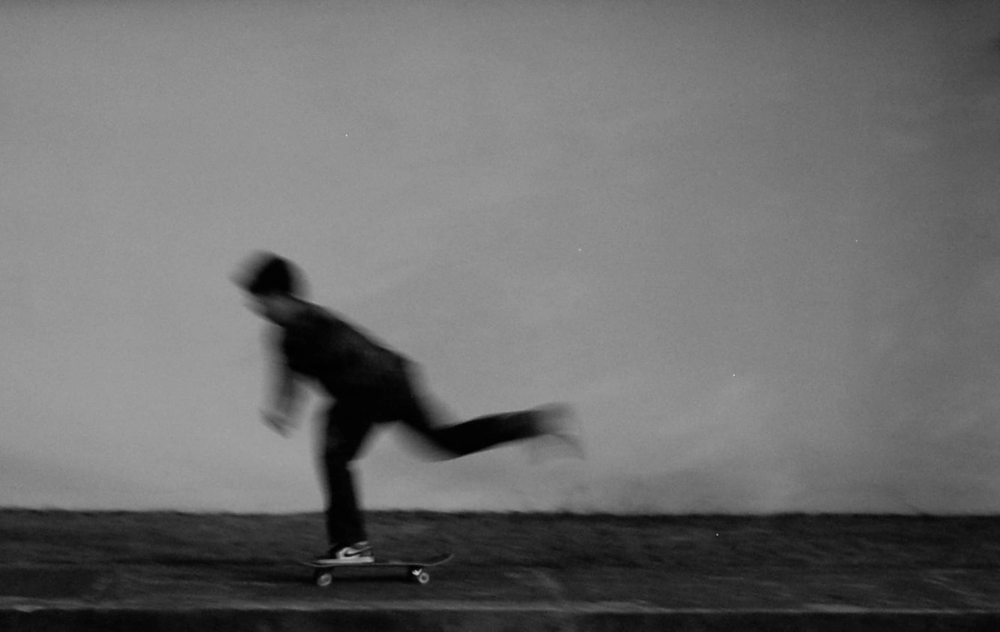
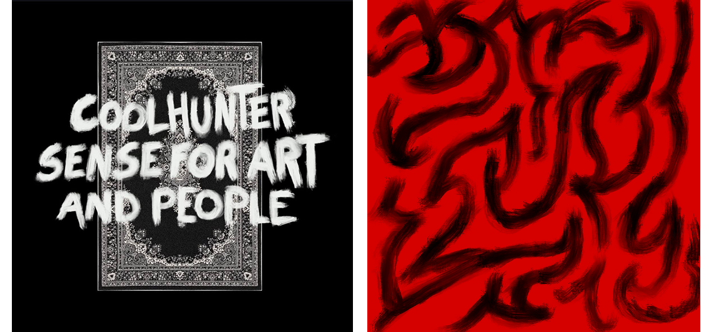
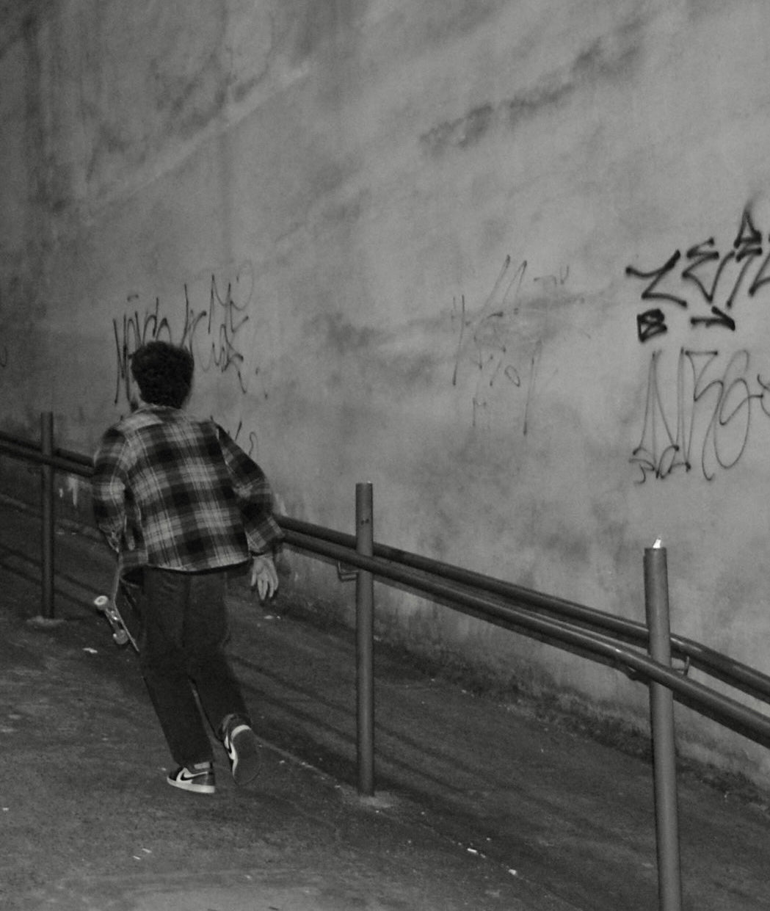
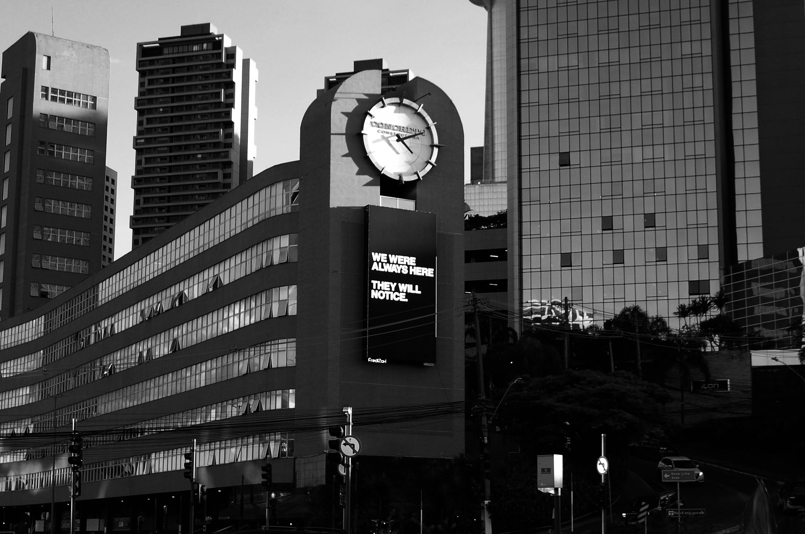

Vèsse World
Manifesto
Dear Member,
If you are reading this, I truly hope it can change your life.
I am not here as a brand or as a company. But as someone who decided to put something into the world without knowing how it would end. As someone who, for a long time, lost hope in things, watched them lose their colors.
What happened is that, for the first time, I was able to hear my own mind. I ventured in and allowed myself to explore the unknown without filters, without judgment.
For the first time, I could see the extraordinary with my own eyes.

I understood that many things did not need to make sense, but that I could give them meaning.
I began to find them and realized that the most beautiful part of creation already existed.
I saw that everything was already there, on the other side, just waiting for a chance to be seen, felt, and turned into something real.
It was always there.

I stopped resisting and began to accept. I learned that it was necessary to embrace even the darkest things within myself, and I understood that, to create, it was also necessary to destroy.
It is about not holding on to anything throughout this long journey, but simply enjoying it as much as possible.
Everything is part of the big picture, and many people do not allow themselves to just enjoy the process.
It is unique, original, and something that will never happen again.


When you are born, you are a phenomenon. Nothing like you had ever existed in the world until that moment. Dont’ let that die. Don’t let the world shape it, is unfair to yourself.
Be gentle with yourself. Listen to yourself.
Stop trying to control or rebuild what has already been destroyed. Dance over the debris. Walk the path enjoying every moment, exploring every part of this journey.
There is a beautiful landscape on the other side. A view that is completely unique and yours. Believe in it. Truly believe.
This brand is a portrait of my journey and my encounter.
A stage for all visions, callings, alter egos, and feelings. It will always be about hope.
With love, Daniel.
Music Sessions
Edition 002 — Divine Therapy · 28/08/2026
Edition 001 — 28/11/2025